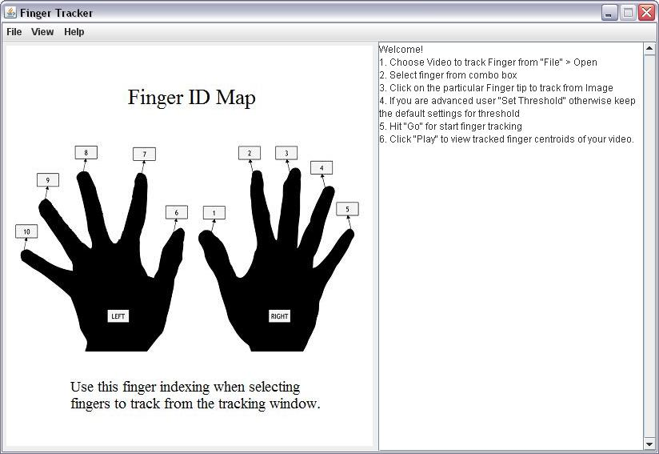
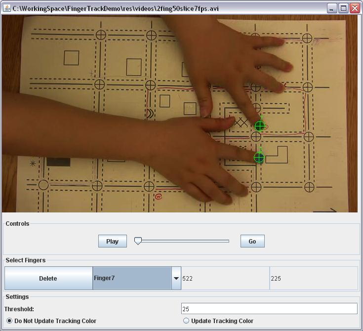

Project Description
Analysis of Tactile Map Reading (ATMR) is a project which helps the scientists to analyses the blind people's behaviors of using haptics map. As a sub-project, Visual Finger Tracking (VFT) extracts the position information of each finger tips from the experimental videos of blind people using haptics map. These important data can be used in the data analysis part of ATMR.
For specific, the following features are included:
Visual Finger Tracking project group combines five students: Peter Maricle, Fan Wang, Kristy Tomas, Raihan Masud and Kyle Vessey. This is a project for UO CIS course 423/510 Spring 2009.
Running Requirement
CPU: Intel Pentium III (or better)
RAM: 128MB
Disk Space: 100MB free storage space
OS: Windows XP, Mac OS
Software: JRE 1.6 (or higher)
Getting Start
1. Open the FingerTracker.jar file.
A window will open displaying the Finger ID Map.
2. Select "File" with the mouse.
A box will appear below your curser with file options.
3. Select "Open"
A box will appear with files and folders listed.
4. Select a video to process and select "open."
A new box will appear with the first frame of the video appearing on the upper portion and the controls in the lower portion.
5. Make finger selections:
a) Finger 1 is ready to be selected by default.
b) Click on the video to identify location of that finger.
c) If selecting more than one finger, Change finger number by selecting the down arrow in the "Select Fingers" section and highlighting the finger number you wish to mark.
d) repeat b and c as many times as neccessary. (optional)
6. Change Threshold by changing the number labled "Threshold." (optional)
7. Choose to update the tracking color every frame or keep the color the same as the first frame by selecting a circles next to the respective options.
8. When you are satisfied with the finger labeling and the options selected, click on "Go."
9. When the video is finished processing, click "Play" to review the results.
Video Format Guide
1.Video Testing
Testing was used with a tripod positioned directly over the map user. Note: The program will not rectify coordinates in the case of in the case of different perspectives - the view of the camera should fit best with the map view. Lighting is also an important issue to take note of. Shadows and light changes during the video taking will change the RGB values being tracked during processing. In terms of color selection, A wide range of distinct colors is most successful for capturing up to 10 inputs. Green colors seemed to be most accurate throughout all testing and is recommended for smaller amounts of input.
Visit the team wiki for more info!
http://www.assembla.com/wiki/show/c5yc7ahA4r3QEDeJe5aVNr
2. Format
Input Format for FingerTracker : uncompressed AVI
*mpeg compressed, *png compressed
Formats we used in testing : MOV, AVI, WMV, MPEG
*these compressions were used when wirking with ImageJ
ImageJ
ImageJ has two classes related to AVI video formats (AVI_reader and AVI_writer) that reads in uncompressed AVI files, but also has the capability to write out uncompressed, mpeg, or png compressed AVI files. Since we are using the ImageJ package in our program, our program only reads in these formats as well.
http://www.media-convert.com/
Media Convert is a free, online video conversion website that supports many conversion options and formats and was used early on in the project's life. This option is not viable if videos and information is to be kept private though.
iMovie
iMovie was used for converting videos on the Mac to uncompressed AVI from the video tests with the Tablet Team. iMovie is a proprietary software that is bundled with most new Macs and uses the Quicktime codecs for video conversion (ImageJ documentation suggests using Quicktime Pro for converting). In our experience, iMovie is less than desirable on formats and seems slower at converting videos.
Any Video Converter
This was a Windows solution that worked well and is freeware, with a payed version offered with more functionality. In particular, it was used to convert webcam videos from Windows Media Format (.wmv) to AVI. It can also deal with .mov, .mpeg and many other formats.
ffmpeg
This converter comes with the Fink distribution and Andrew Munkres, from the tablet team, was able to convert webcam videos with it. It is a viable solution in a Linux-type environment but was not explored by our team. A Mac version was tried but is not up-to-date with the Fink version.
Advanced Program Running Guide
Main Window
After the user start the program, there is a main window like below.

In the window, there is an image shown about the finger IDs. This standard is the same among all ATMR program. On the right, there is console to show the info about the program. Initially, the simple instruction to use the program is presented. During the processing, it shows the data generated.
In the control bar above, users can use File->open to process one video, or File->process all to process all video under the folder ./res/videos. To exit the program, click File->Exit.
The user can personalize the view of the main window using the options under "View" in control bar.
To get help, press Help. And there are technical documentation and user guide. Text and video tutorial is available.
Tracking Window
After the user opens a video, the tracking window is opened.

The first frame of the video is presented default. If the first frame can not be use to assign colors (for instance no finger in this frame), use "Play" button to find a capable one. Assign the colors and IDs of the fingers. If the user changes the mind about the color been assigned, he can use "Delete" to delete it.
Notice that the program only tracks the frame which the user used to the last frame in the video. That is, if an user uses frame 10 to assign which fingers to track, the program only search for frame 10 to the last one.
For advanced user, there is a setting section more options. The program searches for the pixels in current frame with the color similar with the target color and find the center point these pixels. This center point is finger's position of this frame.
Threshold means the range of accepted color. Searching for exactly the same color is unpractical. The color of the same spot will change due to the light or the condition of the camera in each frame. The program uses threshold to set a range of accepted colors. For instance, if the user set the threshold as 20, and the target color is (100, 100, 100), the program will accept any pixel with color value between (80, 80, 80) and (120, 120, 120). If the threshold is too large, the position may not be accurate; while if it's too small, the possibility of "position can not be found" will rise.
Another option is using the color of the last frame's position or using the initial color of the user assigned as target color. The former one corresponds with "Update Tracking Color" in the window and the latter one corresponds with "Do Not Update Tracking Color". The advantage of using the color of the last frame's position is if the color in the video changes dramatically, the program can produce the best result. Using another method will work best when the finger moves outside the video in some frames.
After all settings are done, press "Go", and the processing will start. Wait a while, after the processing is finished, press "Play" to see the result.
XML File
Once the processing of one frame is over, the program will write one line of data for each tracked finger into the result xml file. The format of the xml file is like below. In the root element, the StartDateTime is the time when the processing begins. Each element "event" contains the position of one finger in the frame. It has four attributes: FingerID, time, and x-y dimensions. The time means the time delay in ms of each frame.
<?xml version="1.0" encoding="UTF-8"?>
<coordStream StartDateTime="2009-05-25T10:24:10.953-0700">
<event fingerID="1" time="142.857" X="521" Y="289" />
<event fingerID="6" time="142.857" X="519" Y="225" />
...
</coordStream>
Notice that only one xml will be saved for one video processed. If the user processes one video for multiple times, only the latest result will can be found. If the user processed two different videos with same name, the result of the earlier processing will be overwritten.
Trouble Shooting
Problem: Error when open a video.
Solution: Make sure the video's format is uncompressed avi. If it still doesn't work, let us know.
Problem: Unable to find the correct centeroids of finger tips.
Solution:
1. Notice that the parameters should be filled in before open a video;
2. Change threshold value and the option of whether update tracking color or not.
3. If it still doesn't work, let us know.